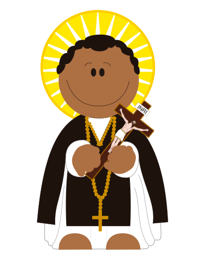
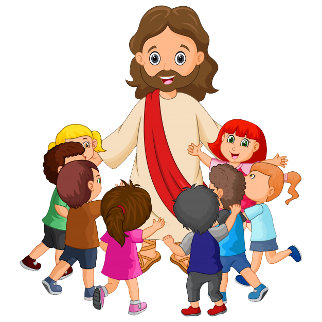
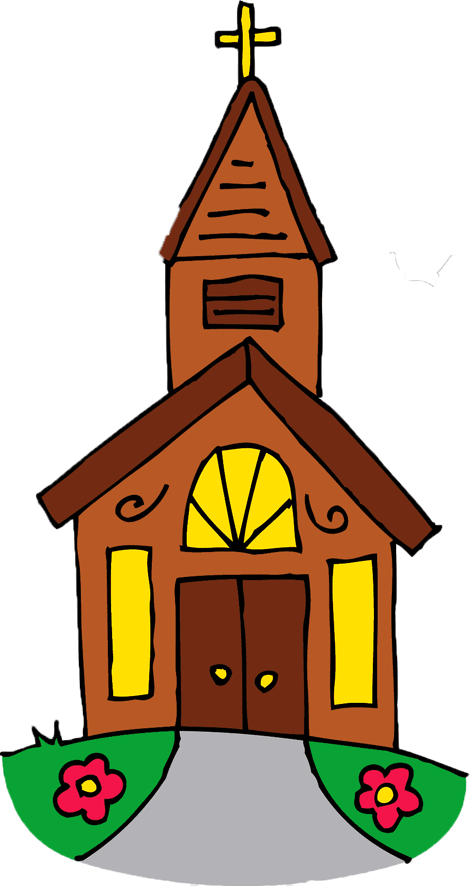

MUSEO CATÓLICO NIÑOS
Oraciones
Evangelistas
Música
Santos

 
ORACIONES
Donde Encontraras oraciones de nuestra iglesia Católica
EVANGELISTAS
Principales exponentes de nuestra iglesia, discipulos de Jesus que predicaron su palabra.
MÚSICA
Interactua y baila con las canciones catolicas que tenemos preparadas para ti
SANTOS
Niños que ahora son santos en nuestra Iglesia, te mostramos quienes son ellos.